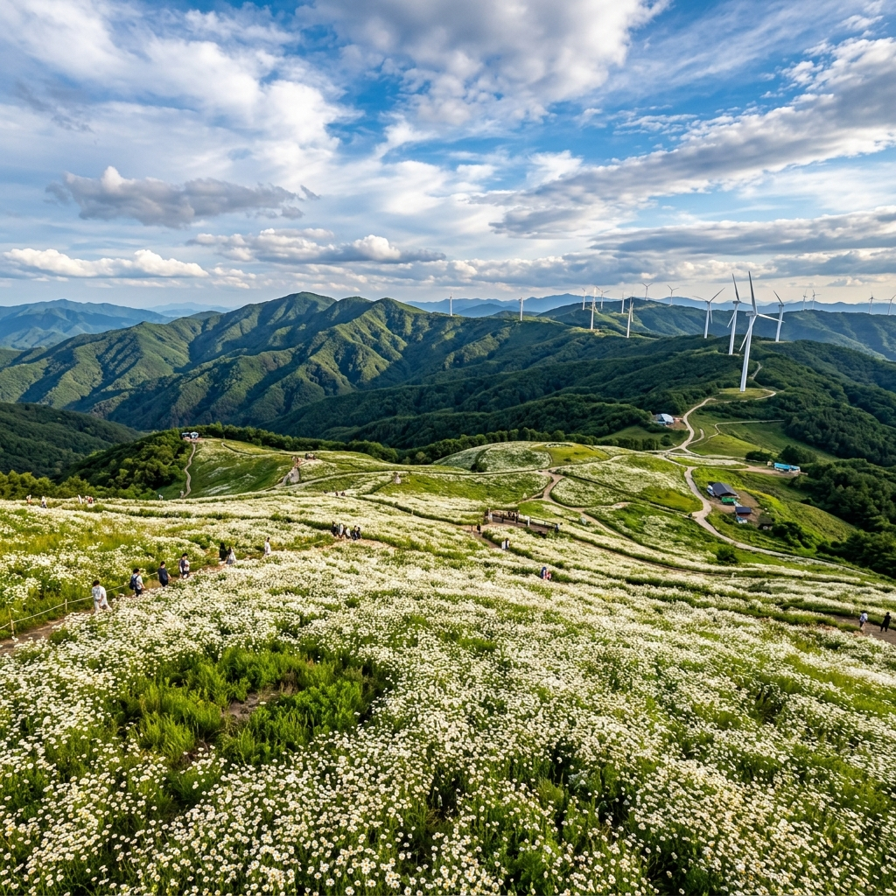
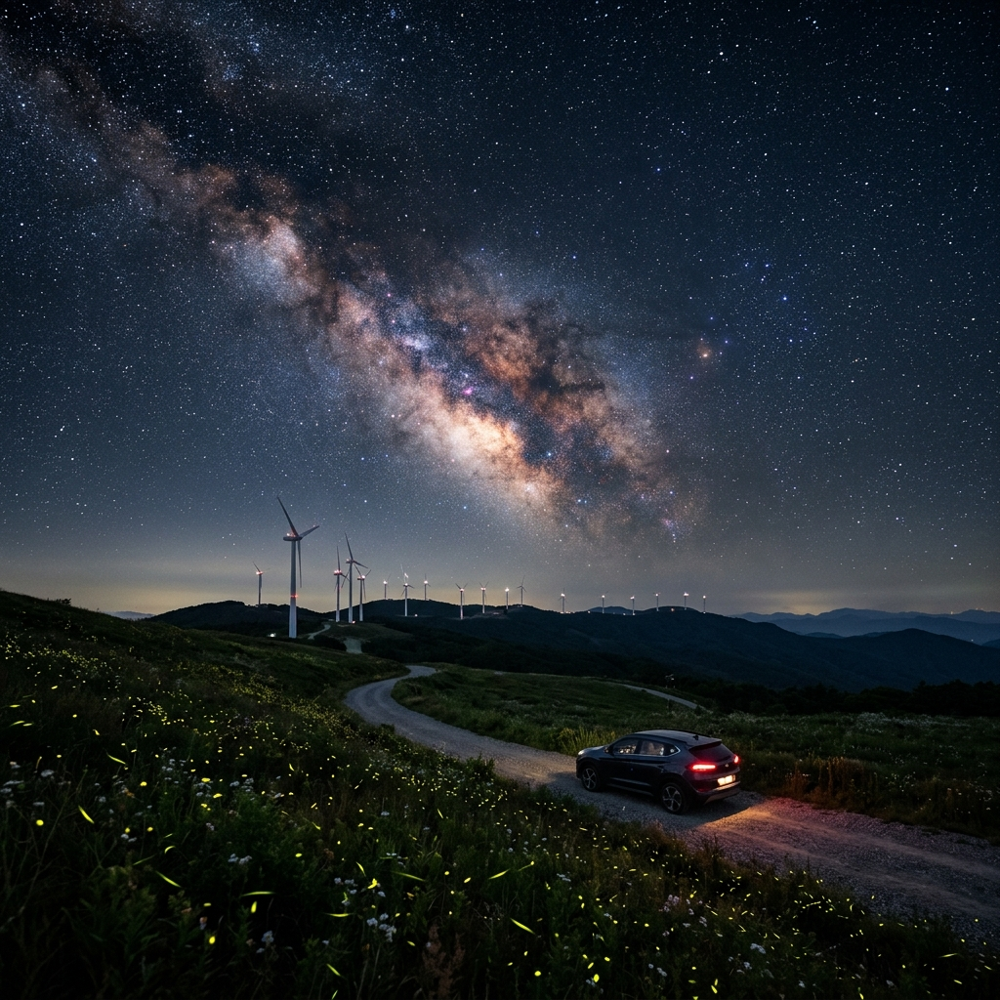

청옥산 육백마지기 가는 법과 야간 은하수 사진, 여름 고원 별밤 캠핑 포인트
처음 청옥산 육백마지기를 알게 된 건 지인이 올린 사진 한 장 때문이었습니다. 광활한 초원 위에 거대한 풍력 터빈이 줄지어 서 있고, 그 위로 은하수가 쏟아지는 사진이었는데, 처음엔 외국인 줄 알았습니다. 강원도 평창에 이런 곳이 있다는 게 믿기지 않아 바로 일정을 잡았습니다.
해발 1,256m 고원인데 도로로 차를 몰고 올라갈 수 있다는 것이 매력입니다. 한여름 무더위가 정점일 때 이곳 기온은 서울보다 7~8℃ 낮아, 짧은 소매만으로는 저녁에 추울 수 있습니다.

육백마지기 고원 데이지 꽃밭과 풍력 터빈 / AI 제작 이미지
01 | 육백마지기, 어떤 곳인가
청옥산(1,403m) 중턱 해발 1,256m에 넓은 고원 초원이 펼쳐진 곳입니다. 이름 그대로 600마지기, 약 12만~18만 평 규모의 광활한 땅이 산 위에 있습니다. 조선 시대 화전민이 개간한 이 땅은 지금은 고랭지 채소밭과 풍력발전단지로 사용됩니다.
7월이면 흰 데이지 꽃밭이 초원 전체를 덮는 절정기를 맞습니다. 고랭지 무·배추의 신록도 더해져 이 시기가 가장 아름다운 풍경을 연출합니다. 풍력 터빈 30기 이상이 능선을 따라 늘어선 모습은 이국적인 분위기까지 더합니다.
밤에는 도심에서는 볼 수 없는 맑고 짙은 별이 쏟아집니다. 주변 수십 킬로미터 이내에 도심이 없어 빛 공해가 거의 없고, 고도가 높아 대기층이 얇아 별이 훨씬 선명하게 보입니다. 은하수 관측이 가능한 몇 안 되는 수도권 접근 가능 명소 중 하나입니다.
02 | 찾아가는 법과 임도 진입 주의사항
서울에서 영동고속도로 → 새말IC 또는 평창IC → 평창읍 → 미탄면 창리 방향으로 오면 됩니다. 소요시간은 약 2시간 30분~3시간입니다. 내비게이션에는 '청옥산 육백마지기' 또는 '평창군 미탄면 창리 육백마지기'로 검색하세요.
임도 진입 후 비포장 구간이 약 6~7km 이어집니다. 좁은 구간이 많아 마주 오는 차와 교행이 불편할 수 있습니다. SUV가 훨씬 편하고, 일반 승용차도 저속 운행하면 올라갈 수 있지만 도로 상태에 따라 다를 수 있으니 최신 현황을 확인하고 출발하세요.
주차는 정상부 근처에 소형 주차 공간이 있으나 협소합니다. 주말 성수기에는 오전 일찍 도착하는 것이 좋고, 차량이 많으면 임도 중간에 주차하고 걸어 올라가야 할 수 있습니다. 대중교통으로는 접근이 매우 어려워 렌터카나 자가용이 사실상 필수입니다.
✍️ 직접 가보니
처음 갔을 때 임도 초입에서 이미 차량이 길게 늘어서 있어 당황했습니다. 성수기 주말에는 오전 7시 이전에 도착해야 한다는 것을 그제야 깨달았습니다. 임도 내 교행 가능한 구간이 100m마다 있어 서로 양보하며 올라가야 하는데, 도착만 하면 그 수고가 아깝지 않을 만큼 풍경이 압도적이었습니다. 풍력 터빈 아래 서 있으면 블레이드가 회전하는 바람 소리가 생각보다 웅장합니다.
03 | 7월 데이지 꽃밭 — 절정 시기와 사진 명당
데이지 만개 시기는 보통 6월 말~7월 중순입니다. 해마다 조금씩 다르니 방문 직전 인스타그램 해시태그(#청옥산육백마지기)로 최신 개화 상황을 확인하세요.
사진이 가장 예쁘게 나오는 시간대는 이른 아침 해가 뜨자마자의 역광 구간과 오후 4~6시 황금빛 빛이 드는 시간입니다. 낮 12시~오후 2시는 빛이 너무 강해 오히려 풍경이 날아가는 느낌이 있었습니다.
흐린 날 안개가 끼면 초원 위에 구름 바다가 펼쳐지는 환상적인 광경을 볼 수도 있습니다. 맑은 날의 꽃밭도 좋지만, 은은하게 안개 낀 날의 터빈 실루엣 사진도 인상적입니다. 날씨가 완벽하지 않아도 실망하지 말고 그 날만의 분위기를 즐기세요.

육백마지기 밤하늘에 펼쳐진 은하수 / AI 제작 이미지
04 | 야간 별 관측 — 은하수 보이는 시간과 카메라 설정
은하수 관측 최적 시기는 7월 말~8월 초, 새벽 0시~3시 사이입니다. 남쪽 하늘에 은하수 핵이 가장 높이 올라오는 이 시간에 맑은 날이면 육안으로도 은하수를 볼 수 있습니다. 월령도 중요해서, 달이 없는 그믐 전후 5일 이내가 이상적입니다.
사진 설정 기본값: ISO 3200~6400, 셔터 속도 15~25초, 광각 렌즈(14~24mm), 조리개 f/1.8~f/2.8. 삼각대는 필수입니다. Sky Map 앱으로 은하수 핵 방향을 미리 파악해 풍력 터빈을 전경으로 배치하면 독특한 구도를 잡을 수 있습니다.
야간에는 기온이 10℃대까지 내려갑니다. 얇은 패딩이나 바람막이를 꼭 챙기세요. 핫팩 하나면 4~5시간의 별 감상이 훨씬 따뜻해집니다.
05 | 차박 정보 — 화장실·전기·샤워
육백마지기 임도와 정상부 주차 공간에서 차박이 가능합니다. 별도 캠핑장이 아니라 임도 갓길·주차공간 이용이므로 화장실은 임도 초입 간이 시설이 유일합니다. 상태가 고르지 않으니 올라가기 전 미탄면 마을에서 해결하고 오는 것을 권합니다.
전기 공급 시설은 없습니다. 캠핑용 파워 스테이션(대용량 보조배터리)이나 차량 인버터를 이용해야 합니다. 취사는 소형 가스버너를 이용할 수 있으나, 화기 사용 시 각별한 주의가 필요합니다.
솔직히 말하면, 편의 시설이 부족합니다. 화장실, 샤워, 전기 없이도 괜찮다면 최고의 별 명소지만, 캠핑 편의 시설이 중요하다면 주변 오토캠핑장을 먼저 예약하고 야간에만 육백마지기를 방문하는 것이 현실적입니다.
06 | 풍력단지 드라이브와 뷰 포인트
능선을 따라 30기 이상의 대형 풍력 터빈이 이어집니다. 터빈 하나 높이만 80~100m로, 바로 아래에서 올려다보면 압도적인 스케일에 놀라게 됩니다. 일몰 시간에 붉은 하늘을 배경으로 터빈이 실루엣처럼 서 있는 장면은 특히 강렬합니다.
드라이브 추천 동선: 미탄면 임도 진입 → 육백마지기 본지(데이지 꽃밭) → 능선 따라 풍력단지 방향 이동 → 전망 포인트에서 조망. 차를 세우고 터빈 사이를 걷다 보면 블레이드가 돌아가는 소리와 바람이 실감 납니다.
구름이 낮게 깔리는 날에는 터빈 상단이 구름 속으로 들어가는 독특한 풍경도 볼 수 있습니다. 이 경우 사진 오히려 더 신비롭게 나옵니다. 완벽한 날씨만 기대하지 말고 다양한 날씨 조건에서 각각의 매력을 즐기세요.
07 | 안반데기와 연계 코스 제안
육백마지기에서 약 30~40분 거리의 안반데기(강릉시 왕산면, 해발 1,100m)를 연계하면 알찬 고원 여행이 됩니다. 안반데기는 고원 배추밭과 일출 구름 바다로 유명한 곳입니다.
제안 일정: 1일차 오후 육백마지기 도착(데이지·터빈 감상) → 일몰 후 차박 → 새벽 은하수 관측 → 이른 아침 안반데기 이동 → 일출·구름 바다 감상 → 귀경. 두 곳 다 자연의 웅장함에 압도당하는 경험을 선사합니다.
다만 두 고원을 이동할 때는 임도 직통이 아닌 국도로 내려갔다 다시 올라오는 경로를 권장합니다. 산악 임도 직통 연결은 비포장이 심해 일반 차량에 무리가 갈 수 있습니다.
안반데기 고랭지 배추밭과 노을 / AI 제작 이미지
08 | 솔직한 장단점 — 이런 분께는 비추천
육백마지기의 장점: 수도권 3시간 내 접근 가능한 은하수 명소, 데이지 꽃밭+풍력 터빈의 독특한 풍경, 고원 시원함, 비용이 거의 들지 않는 피서지.
현실적인 단점:
• 비포장 임도 7km는 승차감이 나빠 멀미 유발 가능
• 화장실·샤워 시설 매우 부족
• 성수기 주말 주차 자리 확보가 어려움
• 날씨 변화가 심해 날씨 운이 필요함
이런 분께는 비추천: 편의 시설이 꼭 필요한 캠핑, 멀미 심한 분, 비포장 도로에 차 긁힐까봐 걱정되는 분, 날씨 보장을 원하는 분. 반면 야경·별·자연 풍경이 최우선이고 불편함을 감수할 수 있다면 국내 최고 수준의 경험을 선사하는 곳입니다.
09 | 방문 전 최종 체크리스트
• 날씨 확인: 기상청(weather.go.kr) 산악 날씨 예보 확인 (고원은 도시보다 변화 심함)
• 달력 확인: 은하수 목적이라면 그믐 전후 5일 이내 날짜로 선택
• 내비 설정: '청옥산 육백마지기' 또는 '평창군 미탄면 창리 육백마지기' 검색
• 차량 점검: 비포장 도로 대비 타이어 공기압, 스페어 타이어 확인
• 연료 주유: 임도 진입 전 주유 완료
• 방한 준비: 얇은 패딩 또는 바람막이 필수 (야간 10℃대)
• 쓰레기 봉투: 쓰레기는 반드시 되가져가기
• 카메라 장비: 삼각대, 광각 렌즈, 리모컨 셔터
이 체크리스트 하나면 별 탈 없이 육백마지기를 즐길 수 있습니다. 날씨 운만 따라준다면 잊을 수 없는 밤이 될 것입니다.
📝 작성자 메모
강원도 고원 여행지와 별 관측 명소를 꾸준히 소개하고 있습니다. 청옥산 육백마지기의 개화 시기나 임도 상태는 해마다 달라질 수 있습니다. 정보 기준일: 2026-06-29. 방문 전 SNS(#청옥산육백마지기) 최신 후기와 기상청 날씨를 꼭 재확인하세요.
#청옥산육백마지기
#강원도별보기
#은하수관측
#평창고원여행
#풍력단지드라이브
#차박명소
#안반데기연계
#7월여름여행
#고랭지피서
#데이지꽃밭